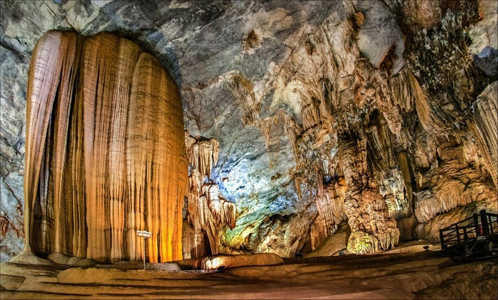
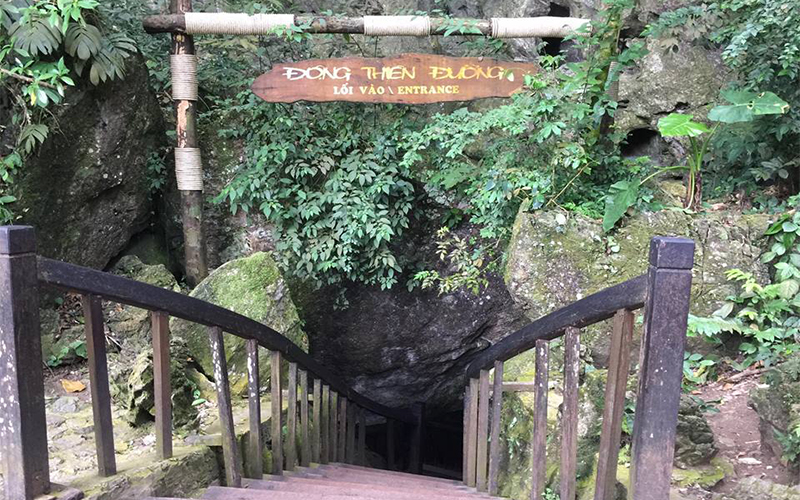
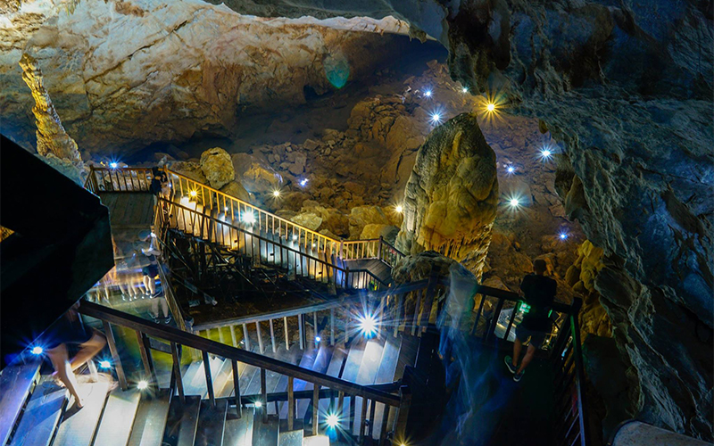
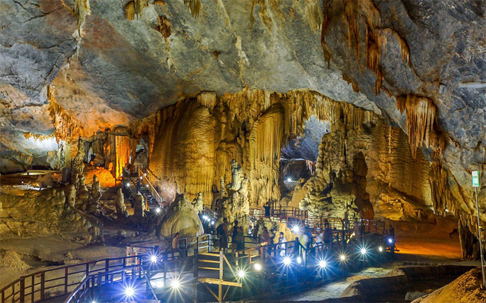
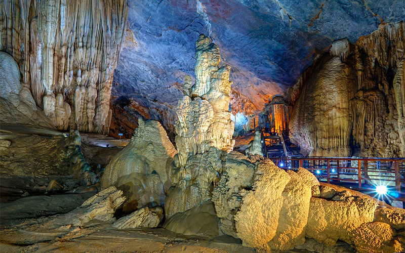
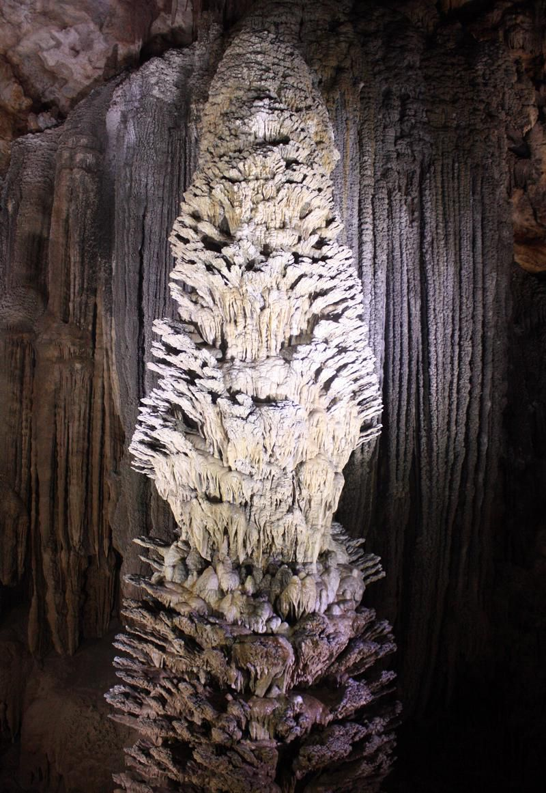
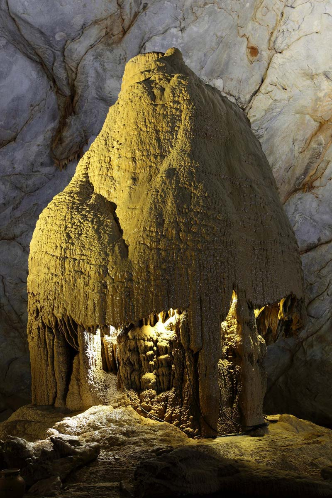
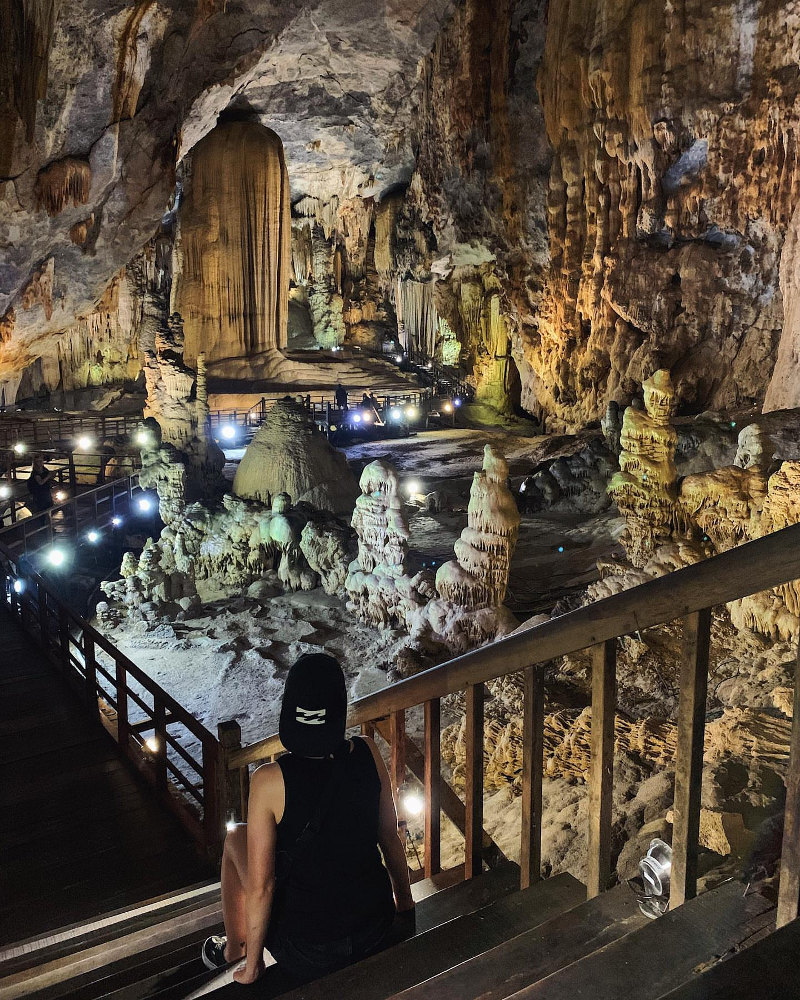
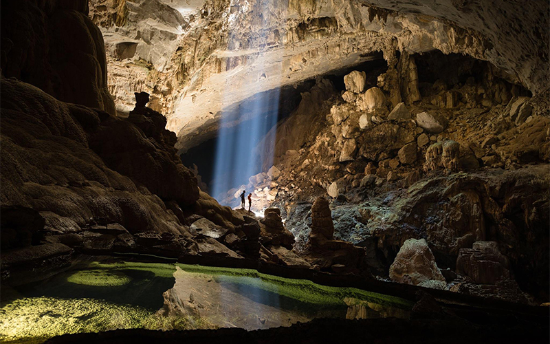

ĐỘNG THIÊN ĐƯỜNG - HOÀNG CUNG TRONG LÒNG ĐẤT
Động Thiên Đường có chiều dài hơn 31,4 km, chiều rộng dao động từ 30 đến 100m, nơi rộng nhất lên đến 150m; chiều cao từ đáy động lên đến trần động khoảng 60-80m, được Hiệp hội hang động Hoàng gia Anh đánh giá là hang động khô dài nhất Châu Á, một trong những hang động kỳ vĩ nhất mà đoàn từng khảo sát nhiều hang động trên thế giới.
Động Thiên đường có cấu trúc kỳ vĩ, tráng lệ và huyền ảo khiến những người khám phá hang động liên tưởng về một thiên cung nơi trần thế (vì vậy mà động được đặt tên là Thiên đường) là điểm đến không thể bỏ qua trong mọi chuyến du lịch Quảng Bình của du khách kể cả trong và khách nước ngoài.
Không chỉ dừng lại ở cảm xúc ngạc nhiên, bất ngờ mà du khách còn hết sức sửng sốt, lặng người trước vẻ đẹp quyến rũ có một không hai của hang động này. Cửa động nhỏ chỉ vừa đủ một người xuống, nằm dưới lèn đá cao hơn trăm mét trông rất ngoạn mục.
Vẻ đẹp huyền ảo tráng lệ của hang động được hé lộ khi có ánh sáng đèn chiếu rọi vào muôn vàn thạch nhũ kỳ ảo. Cửa vào nhỏ hẹp nhưng bên trong hang có bề rộng hơn 200m, trần động vút cao, rộng thênh thang, du khách có thể tha hồ ngắm nhìn cảnh sắc nơi đây.
Bước vào trong động, mọi người sẽ được thỏa chí tưởng tượng trước vô vàn thạch nhũ có nhiều hình thù khác nhau mà những người “khai phá” đã dùng những ngôn ngữ mỹ miều để đặt tên. Nào Cung Thạch Hoa Viên với khối thạch nhũ như tượng đức mẹ đồng trinh tay bế hài đồng; nào Cung Giao Trì là nơi Ngọc Hoàng bàn việc nước với các cận thần, xung quanh là tượng kỳ lân, chim phượng hoàng..
Đặc biệt trong động có những hình ảnh giống biểu tượng văn hóa các vùng miền, ở sâu trong động có nhiều thớ đá thoải ra thành bậc thang rất uyển chuyển, dài hun hút và phân bậc như ruộng bậc thang, giữa động có những ô như biểu trưng của văn minh lúa nước, nhiều cột thạch nhũ hình tháp Champa điểm rất đẹp.
Độc đáo là Cung Quảng Hàn, nơi khối thạch nhũ rũ xuống trông như bức rèm the của tiên nữ hay Cung Quần Tiên hội tụ với cả quần thể tượng Phật A Di Đà,… ấn tượng nhất là Tháp Liên Hoa với hình thù đặc sắc mà dưới mắt mỗi người, ở mỗi góc nhìn đều mang những hình thù khác nhau, đây là khối thạch nhũ có hình thù vô cùng hiếm thấy lạ mắt. Thật ra đó là khối thạch nhũ được hình thành từ những giọt nước bắn tung tóe không theo quy luật nào đã tạo nên vẻ đẹp huyền bí cho động Thiên Đường.
Càng đi càng thấy tạo hóa sau mấy trăm triệu năm đã miệt mài chạm khắc để đến ngày nay cho ra những hình thù kỳ ảo như vậy. Ngoài ra, các hình nhũ đá gợi liên tưởng hình ảnh nhà rông đoàn kết của đồng bào Tây Nguyên.
Vì nhiệt độ trong hang luôn ở 20-21 độ C. Chỉ ngồi trước cửa động thôi cũng cảm nhận được từng luồng hơi mát từ dưới động thổngược lên, phả vào da thịt trong cái nắng 36-37 độ C ngoài trời.
Sau khi đi hết 1km cầu thang gỗ, du khách có thể đi bộ thêm 6km nữa để tiếp tục khám phá những nhũ đá, măng đá muôn hình vạn trạng trong động Thiên Đường. Và điểm đến cuối cùng là “giếng trời” với cột ánh sáng mặt trời chiếu rọi vào trong động. Tuy nhiên, hành trình 6km kế tiếp này chỉ phù hợp với những du khách ưa mạo hiểm, có kinh nghiệm khám phá hang động và có sức khỏe tốt.
Động Thiên Đường ở đâu?
Động Thiên Đường nằm trong Vườn Quốc Gia Phong Nha Kẻ Bàng ở huyện Bố Trạch thuộc tỉnh Quảng Bình cách Km16 đường Hồ Chí Minh nhánh tây khoảng chừng 4km.
Lưu ý: Bạn nên mang giày thể thao hoặc các loại giày dép mềm phù hợp cho việc đi bộ, leo núi khi quyết định tham quan động Thiên Đường nhé.